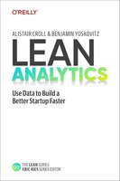

Полезные книги
| Название | Автор | Первая публикация | Обложка книги |
|---|---|---|---|
| Как лгать при помощи статистики | Дарелл Хафф | 1954 г. | |
| Голая статистика. Самая интересная книга о самой скучной науке | Чарльз Уилан | 2016 г. | |
| Статистика и котики | Владимир Савельев | 2016 г. |  |
| Lean Analytics: Use Data to Build a Better Startup Faster | Алистер Кролл и Бенджамин Йосковиц | 2013 г. |  |
| Читать книгу: «Искусство статистики. Как находить ответы в данных» | Дэвид Шпигельхалтер | 2020 г. |  |